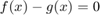

Solving an equation implicitly
Solving for satisfying .
Contents
Define each side of the equation
clear all
f = @(x) x^3;
g = @(x) 2*x + 2;
Write objective function
Solving is equivalent to solving 
objfn = @(x) f(x) - g(x);
Try to determine a rough guess for the solution
Solution might not be unique! Graphing can help determine uniqueness as well as initial guess, but not so much if you have many dimensions. Might have to try different initial guesses. Theory can often help give reasonable guess or otherwise restrict the domain (e.g. only non-negatives).
hold on fplot(@(x) f(x), [0 3]) fplot(@(x) g(x), [0 3]) hold off % Looks like about 1.8 or so is a good guess.
Warning: Function behaves unexpectedly on array inputs. To improve performance, properly vectorize your function to return an output with the same size and shape as the input arguments.
Solve for root of objective function
The second argument of fsolve is the guess for .
fsolve(objfn,1.8)
Equation solved.
fsolve completed because the vector of function values is near zero
as measured by the value of the function tolerance, and
the problem appears regular as measured by the gradient.
ans =
1.7693